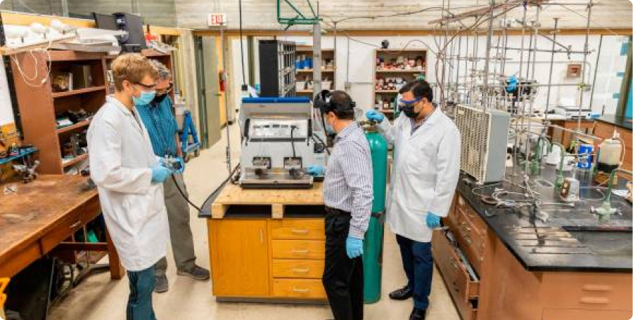

<!DOCTYPE html>
<html><!DOCTYPE html>
  <html lang="es">
    <head>
      <meta charset="UTF-8">
      <meta name="viewport" content="width=device-width, initial-scale=1.0">
      <title>Ecoactualizate</title>
      <link rel="shortcut icon" href="../assets/favicon.ico" type="image/x-icon">
      <link rel="preconnect" href="https://fonts.googleapis.com">
      <link rel="preconnect" href="https://fonts.gstatic.com" crossorigin>
      <link href="https://fonts.googleapis.com/css2?family=Montserrat:wght@200;300;400;500;600;700;800;900&amp;display=swap" rel="stylesheet">
      <meta http-equiv="X-UA-Compatible" content="IE=edge">
      <script defer src="../js/index.js" type="module"></script>
      <link rel="stylesheet" href="../css/noticias.css">
    </head>
  </html>
  <body>
    <!-- **************** Navbar **************** -->
        <section class="navbar-light">
              <div class="navbar-container container"><a class="branding" href="../">
                  <h3 class="h3 branding__title">Ecoactualizate</h3></a>
                    <button class="menu-toggler"></button>
                <nav class="nav-menu">
                  <ul>
                    <li><a class="link" href="../">Inicio</a></li>
                    <li><a class="link link--active" href="../actualizate/actualizate.html">Actualizate</a></li>
                    <li><a class="link" href="../noticias/noticias.html">Noticias</a></li>
                    <li><a class="link" href="../nosotros/nosotros.html">Nosotros</a></li>
                  </ul>
                  <div class="nav-menu__button"> <a class="btn btn-primary btn-md" href="../contribuir/contribuir.html">Contribuir</a></div>
                </nav>
              </div>
        </section>
    <!-- **************** Fin Navbar **************** -->
    <!-- ***************************** MAIN *****************************-->
    <main>
          <section class="noticia noticia--noticia">
                <div class="noticia-container container">
                  <div class="noticia__image"></div>
                  <div class="noticia-metadata noticia-metadata--noticia">
                    <div class="noticia-metadata__categoria noticia-metadata--noticia__categoria">
                      <p class="caption regular">Categoría</p>
                      <p class="body bold">Comercial</p>
                    </div>
                    <div class="noticia-metadata__fecha-publicacion noticia-metadata--noticia__fecha-publicacion">
                      <p class="caption regular">Fecha publicación</p>
                      <p class="body bold">30 Mayo 2021</p>
                    </div>
                    <div class="noticia-metadata--noticia__url" href="https://www.elcolombiano.com/medio-ambiente/oswaldo-guio-colombiano-que-producira-fertilizantes-a-partir-de-oxido-nitroso-EN15090422">
                      <p class="caption regular">Fuente</p><a class="body bold" href="https://www.elcolombiano.com/medio-ambiente/oswaldo-guio-colombiano-que-producira-fertilizantes-a-partir-de-oxido-nitroso-EN15090422">https://www.elcolombiano.com/medio-ambiente/oswaldo-guio-colombiano-que-producira-fertilizantes-a-partir-de-oxido-nitroso-EN15090422</a>
                    </div>
                  </div>
                  <div class="noticia__content">
                    <h3 class="h3 semi-bold">Colombiano logró crear fertilizante con gas contaminante de la atmósfera</h3>
                    <p class="body regular">Producir fertilizante a partir de uno de los mayores contaminantes de la atmósfera de una manera más fácil es lo que ha logrado por primera vez un equipo de químicos de Miami, los cuales confían en abrir así la puerta a que los granjeros lo puedan elaborar algún día en el mismo lugar de los cultivos.
            Los profesores de química de la Universidad de Miami (UM) Carl Hoff y Burjor Captain, junto con los estudiantes graduados Jack Davis y Oswaldo Guio, este último de origen colombiano, lograron convertir el contaminante óxido nitroso en el fertilizante nitrato de sodio usando una sal, el óxido de sodio, y energía mecánica para conseguir reacciones sólidas.
            a están en el trámite de obtener una patente para su método, que es fruto de una investigación iniciada hace tres años para dar con una alternativa más eficiente y limpia al llamado Proceso de Ostwald, de conversión del óxido nitroso.
            Contaron para ello con 425.000 dólares otorgados por el Departamento de Energía de EE.UU.
            El óxido nitroso (N2O), también conocido como “gas de la risa”, es uno de gases de escape de las fábricas donde se produce ácido nítrico mediante la quema de amoníaco, junto al óxido nítrico (NO) y el dióxido de nitrógeno (NO2).
            Un residuo contaminante convertido en algo útil.
            El N2O es considerado una de las sustancias que más agotan la capa de ozono y es 300 veces peor que el dióxido de carbono en términos de contaminación y calentamiento global.
            Las emisiones globales de gases contaminantes están en cerca de 30 millones de toneladas al año, casi el doble de lo que se calculaba hace diez años, según datos de la Administración Nacional de la Atmósfera y los Océanos de EE.UU.
            El 81 % de las emisiones son de dióxido de carbono, un 19 % de gas metano y un 7 % de óxido nitroso.
            La industria paga por quitarse de encima ese residuo, mientras que, por el contrario, el nitrato de sodio, que se usa como fertilizante y en aplicaciones industriales y en nutrición animal, es algo valioso.
            “En vez de quitar el oxígeno presente en los tres gases que hemos mencionado, los hacemos reaccionar con una sal y una fuente de oxígeno y los convertimos en nitrato de sodio, llamado salitre chileno, que ha sido históricamente una fuente importante de fertilizante para los cultivos”, explicaron a Efe.
            Con el método creado por estos científicos el proceso de conversión es más fácil, hasta el punto de que abre la posibilidad de en el futuro hacerlo en el mismo lugar donde se va a usar el nitrato de
            </p>
                  </div>
                  <div class="noticia-btns noticia-btns--both"><a class="noticia-btns__left btn btn-lg btn-secondary" href="../noticias/noticia1.html">
                      <p class="body bold">Ir a la anterior</p></a><a class="noticia-btns__right btn btn-lg btn-secondary" href="../noticias/noticia3.html">
                      <p class="body bold">Ir a la siguiente</p></a></div>
                </div><a class="noticia__back-btn" href="../noticias/noticias.html"></a>
          </section>
    </main>
    <!-- ***************************** FIN MAIN ***************************** -->
    <!-- ***************************** FOOTER *****************************-->
    <footer>
            <section class="footer">
              <div class="footer-container container">
                <div class="footer-social">
                  <h3 class="h3 h3-upper extrabold">EL FUTURO NO ES DESECHABLE</h3>
                  <div class="footer-social__container"><a href="https://api.whatsapp.com/send?phone=3002047922"></a><a href="mailto:sofiatobon2020@gmail.com"></a></div>
                </div>
                <div class="footer-branding"><a class="footer-branding__container" href="#">
                    <p class="body bold">Ecoactualizate</p></a><a class="btn btn-primary btn-sm" href="../contribuir/contribuir.html">Contribuir</a></div>
              </div>
            </section>
    </footer>
    <!-- ***************************** FIN FOOTER ***************************** -->
  </body>
</html>